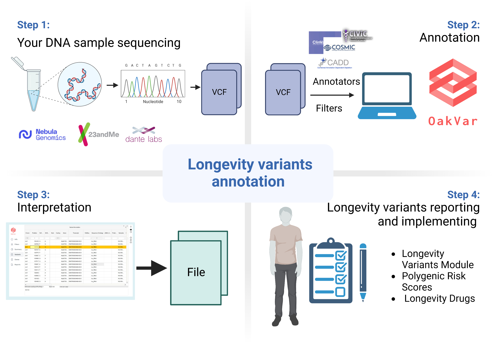
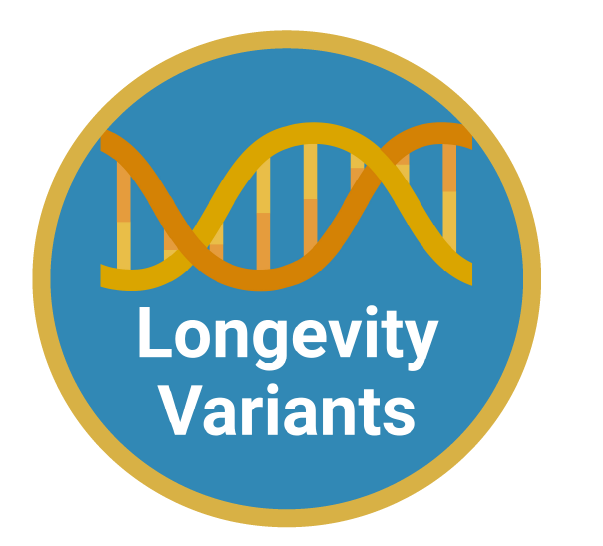
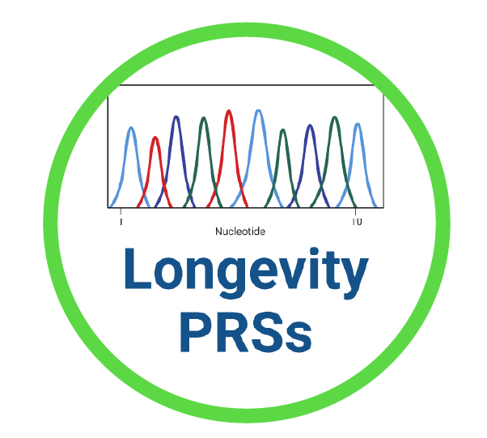

Just DNA-Seq is a set of open-source libraries and pipelines designed to help you with:
You can test the project right now! Click the link to access our online portal http://agingkills.eu and explore it.
First human genome sequencing project concluded Apr 14, 2003 after more than 12 years of labor and costing around 3,000,000,000$. Today it turned from a great human endeavor to something widely accessible. Sequencing is commercially available at a price of roughly 400-800$. You get both sequencing and interpretation of the results for the price. In fact, the sequencing job is often served as a side dish to predictions.
So, why bother with the DIY approach when there is such a variety of commercical options?
The lack of transparency, privacy and, most importantly, room for customization are the main drivers for us, Just DNA-Seq team, to develop a DIY toolbox.
Reports contents are typically decided by the service provider, your choice is limited with their product line. Results you get from such services are based on proprietary databases and algorithms. While having large R&D departments and a lot of medical data to base conclusions upon, their methods are not transparent at all, in many cases, you have no idea why they made this or that prediction. Verifying or comparing their results is therefore troublesome, especially, when you get totally different predictions from different companies.
More to that, what if we want to see how well our genes align with the prospect of longevity? On one hand, it is known that surviving up to 90 years is more about lifestyle choices. On the other hand living longer depends more on the genetics. People with exceptional longevity are not distinct in terms of lifestyle factors from the general population [PMID: 21812767]. Unfortunately, there are simply no commercial offerings at all to address the demand for longevity-related predictions.
At the same time, all the information necessary to do your own genomics research is out there, generously shared by the scientific community and openly available.
So, why not to use existing open-source solutions then? Well, no luck here either! We’ve looked through the available solutions and found out there are no tools to cover one topic very close to our hearts: genetics of longevity.
That’s when Just DNA-Seq comes into play!
The Just DNA-Seq platform consists of OakVar (Open-source Genomic Variant Analysis Platform) modules, bioinformatics pipelines, and additional libraries. One can realign and annotate the genome of interest employing Just DNA-Seq tools to to retrieve polygenic risk scores (PRS), information about variants associated with age-related diseases or major life threatening risks and longevity-associated variants present in genome.
|  |
|
|---|
|  |
|
|---|
|
|
|---|
|
|
|---|
|
|
|---|
Detailed user documentation is still in the making and will be available at https://just-dna-seq.readthedocs.io
Meanwhile we recommend watching our workshop! It demonstrates and explains common use-cases are with the examples that you can reproduce.